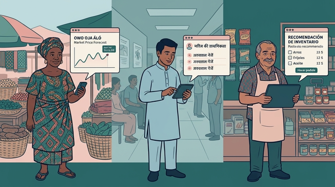

Gooey elements
Every element a page can use, with every slot filled. Pages contain
content only: copy an example, change its text, and keep the
slot names. Start new pages from
page-skeleton.html.
gooey-page
Wraps the whole page body, exactly once. Until the shared module has
loaded, its children are hidden behind a spinner. Put the page's
content between header and footer in one <main>:
the built-in "Skip to main content" link jumps there.
Attribute theme: light (default) or
dark.
…
…
…
…
gooey-header
The fixed bar at the top of this page. Slots:
title (fades in after scrolling), default (nav links,
hidden on phones), login (keep it a real
<a> whose text is exactly Login;
gooey.ai swaps it for the user's name). Attribute
progress: adds a reading-progress bar along the top.
gooey-hero
The first thing inside <main>. Slots:
eyebrow, title (the page's one
h1: text, or a brandmark <img>),
subtitle, default (intro paragraphs, tags, stats),
cta (buttons), byline, image
(beside the text on wide screens, below it on phones). Attribute
variant: full for a full-screen essay
opener with a large bold title.
Gooey.AI · Proposal
A page title that can run to two lines
A one-sentence subtitle that says what the page is about.
An intro paragraph with the key facts, and a link if it needs one.
Primary action
Secondary action
By Sean Blagsvedt & Archana Prasad · Founders, Gooey.AI
gooey-section
A full-width band of content with a line above it; it fades in as it
scrolls into view. Slots: heading (an h2),
intro, default (paragraphs, lists, columns, images…).
Attributes: variant plain (default),
tinted, dark; width="wide"
lets paragraphs run wider.
Section heading
Body paragraphs go straight into the section. Links and bold text work as usual.
- Lists are fine too.
- Each item on its own line.
A tinted section
An optional introductory sentence, a little larger.
Use it to set one band apart.
A dark section
Use sparingly, for one standout band per page.
gooey-columns + gooey-card
gooey-columns lays its children out side by side, and
wraps them onto more rows as the screen narrows. Attribute
cols: 2, 3 (default),
4, or 7-5 (a wider column beside a narrower
one; wrap a column's several paragraphs in a plain
<div>). size="narrow" keeps small
items such as stats side by side on narrower screens. gooey-card slots:
image, title, default (text).

Beneficial
Sovereign AI must benefit each nation's people, society and economy.
Reflective
It must speak each nation's languages and reflect its culture.
Not extractive
Free from foreign surveillance and suspension.
gooey-feature
A short point in a bordered box. Slots: one of icon
(a Font Awesome <i>), logo (an
<img>) or value (a big number); then
title, default (text), cta (a button).
Attribute variant="dark": a call-to-action card.
AI Library of Commons
Open repository of community-created datasets and works.
Goethe-Institut India
31
Fellows
Email us
Tell us how you'd like to contribute.
research@gooey.ai
gooey-stat
A headline number. Slots: label, value,
note. Attribute variant="highlight" colours
the number.
Librarians19,000+across 8,000+ libraries
Pilot fellows313-month pilot
Outputs10 datasets
gooey-button
Wraps one real <a>. Attribute
variant: primary (default),
secondary.
gooey-image
An image with an optional caption. Slots: default (one <img> with alt), caption.
gooey-quote
A pull quote. Slots: default (the quote itself), attribution.
"We built in a day what we had been working on for three months."
— Paul Essene, Opportunity International
gooey-person
A person with a photo. Slots: photo (an
<img>), name, role,
link (an <a>).
Sean Blagsvedt
Founder, Gooey.AI
LinkedIn
Archana Prasad
Founder, Gooey.AI
LinkedIn
gooey-faq + gooey-faq-item
Questions that open and close (also with the keyboard).
gooey-faq-item slots: question, default
(the answer).
What is an AI workflow?
A human-readable recipe: prompts, model choices, tools, knowledge documents and evaluations bundled around a real use case.
Can I fork one?
Yes. Browse workflows on gooey.ai/explore.
gooey-callout
A highlighted note. Slot: default. Attribute variant: note (default), warning.
Note: cost figures are public estimates.
Warning: this dataset is still being reviewed.
gooey-tags
A row of small labels. Slot: default (one <span> per tag).
Participatory AI
AI Literacy
Kannada & multilingual
gooey-steps + gooey-step
A numbered list; the numbers fill themselves in.
gooey-step slots: title, default (text).
Participatory design process
A working roundtable shapes the fellowship around real needs.
Inclusive AI platform
Low-code, multilingual tools for publishing in local languages.
gooey-gallery
Images in a row that scrolls sideways. Slot: default (<img> elements, each with alt).
gooey-footer
Slots: default (optional extra content above the brand line, e.g.
acknowledgements), note (a short line beside the logo).